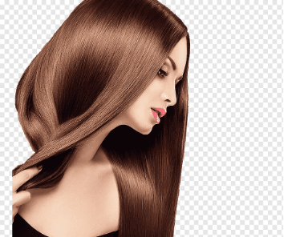
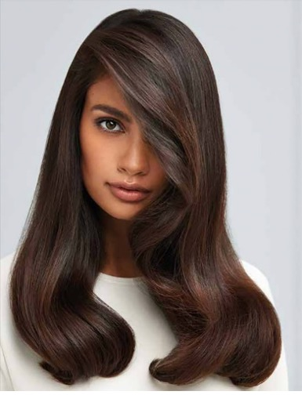
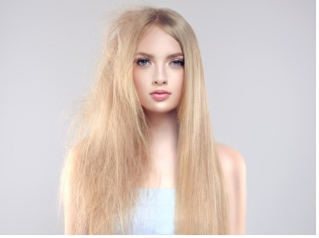
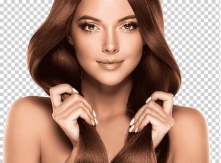
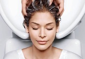
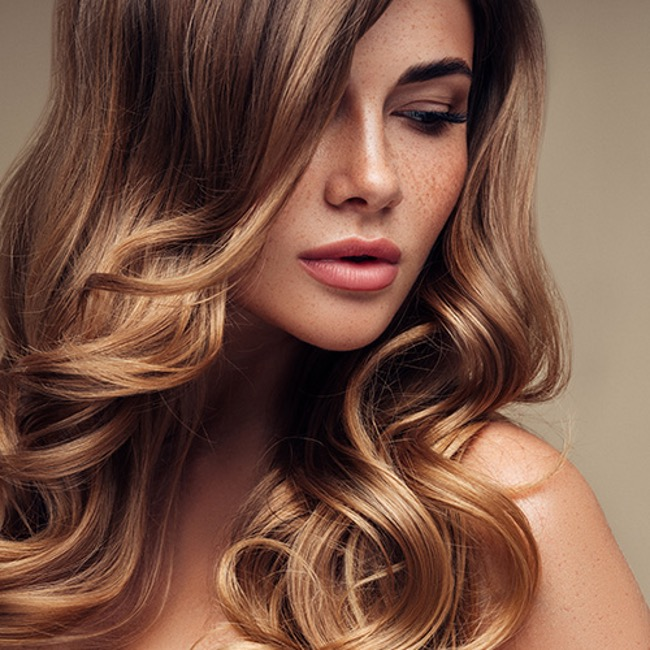

Situé en plein cœur de Menton, proche de la gare routière et SNCF, La Loge Privée
vous accueil dans la résidence Patricia au 18 rue Pietra Scritta pour des prestations
uniquement sur rendez-vous.
La Loge Privée vous offre l’expérience d’un salon atypique et intimiste.
Ici, tout est pensé pour votre bien-être. Une ambiance chaleureuse dans un cadre
cosy et élégant.
Prendre le temps d’évaluer votre demande, découvrir vos envies et effectuer un
diagnostic personnalisé de vos cheveux est pour moi primordial pour obtenir un beau
résultat et un cheveu le plus sain possible.
Au sein de La Loge Privée, je vous prodiguerai des conseils sur mesures et je
pourrais vous orienter et vous renseigner sur toutes les solutions à la problématique
de votre cheveu.
Avec plus de 10 années d’expérience et de nombreuses formations, faites-moi
confiance et accordez-vous cette parenthèse pour prendre soin de vous.
Les spécialités – Les Lissages
- Avec plus de 10 années de savoir-faire dans ce domaine, la spécialiste en lissage saura mettre à profit son expérience pour vous aider à trouver le lissage qui vous convient parmi nos différentes techniques.
Lissage Japonais
Venu tout droit du Japon, ce lissage a su évoluer pour s’adapter aux cheveux occidentaux et maghrébins. Fabriqué à partir de protéines de soie et effectué dans de bonnes conditions, le lissage japonais n’abîme pas les cheveux.
La totalité de la chevelure sera traitée la première fois et par la suite nous traiterons uniquement les repousses au bout de 6 mois minimum.
Prestation effectuée uniquement sur des cheveux naturels ou colorés.
Comptez entre 5 et 6h pour effectuer la prestation.
Tarif variant par rapport à la longueur et l’épaisseur des cheveux entre 250 et 600e
Lissage Coréen
Ce lissage vous permettra de conserver du volume et un rendu plus naturel.
Avec de la Kératine intégrée, le Lissage Coréen est un bon compromis entre un lissage japonais et un lissage brésilien. Il s’adresse à celles qui veulent lisser leur chevelure, conserver une légère ondulation ou diminuer un volume trop important comme avec des cheveux afros par exemple.
La totalité de la chevelure sera traitée la première fois et par la suite nous traiterons les repousses au bout de 3 mois minimum. Prestation effectuée uniquement sur des cheveux naturels ou colorés.
Comptez environ 3h pour effectuer la prestation. Tarif variant par rapport à la longueur et l’épaisseur des cheveux entre 150 et 450e
Lissage Brésilien
Le lissage dure entre 3 et 5 mois, avec l’utilisation de gamme d’entretien. Sa composition garantit un lissage parfait, pour des cheveux forts et un résultat durable. Il peux être effectué sur les femmes enceintes et les enfants. L’acide lactique permet de réduire le volume des cheveux. Les huiles d’Inca ninchi, noix de coco et quinoa, les oméga 3,6 et 9 traitent la fibre capillaire pour un résultat doux et soyeux.
Ce lissage thermo actif vous permet une facilité de coiffage avec un brushing plus rapide et une chevelure qui gonfle moins à l’humidité dès que vous apporterez de la chaleur (sèche-cheveux, plaques, brushing…)
Il peut être pratiqué sur tous les types de cheveux même les plus endommagés. Comptez environ 2h pour effectuer la prestation. Tarif variant par rapport à la longueur et l’épaisseur des cheveux entre 130 et 300e
Devis possible par téléphone
Les soins ( Les soins Eksperience, Thalassothérapie et Botox )
Les Soins Eksperience
Les Soins Thalassotherapie
Un mélange fait en direct, à base d’argile active pour une efficacité instantanée.
Pour cela, plusieurs protocoles sont possibles : dermo-apaisant, anti-séborréïque, purifiant, reconstructeur, anti-chute et sublimateur de couleur.
Recommandé sous forme de cure.


Le soin Botox Capillaire
Il répare le cheveu jusqu’au cortex pour une durée de 2 à 3 semaines pour le botox express et de 3 à 5 mois pour le botox profond avec l’utilisation de la gamme d’entretien.
Il a pour effet de faciliter le coiffage et de diminuer le temps de brushing.
Le Botox Capillaire Ybera est le premier soin qui stoppe la chute des cheveux et qui fait disparaître les fourches pour un cheveu souple, brillant, soyeux et visiblement rajeuni.
En exclusivité à La Loge Privée
Pour plus d’informations contactez nous
Les techniques - Les techniques d’éclaircissements

Le Balayage
est un travail d'éclaircissement à l'aide de très fines mèches diffuses pour obtenir un résultat fondu et très naturel. Contrairement aux mèches qui sont relativement larges et marquées ce qui les rendent visibles et prononcées, le balayage permet de fondre les reflets dans votre couleur de cheveux initiale et apporte de l’éclat à votre chevelure.
L'ombre Hair / Sombré hair
Cette prestation permet de garder une racine naturelle ou plus foncée avec des longueurs plus claire Cette technique donne l’impression d’un dégradé, d’une décoloration en douceur, comme si notre chevelure avait passé un mois au soleil. C'est un travail de quelques mèches fondues en racines avec un éclaircissement progressif jusqu'aux pointes.Le Hairbronzing
Tarifs
Le soin est compris dans toutes les prestations
| BRUSHING | FORFAIT COUPE |
|---|---|
|
Brush cheveux courts 23€ Brush cheveux mi-long 30€ Brush cheveux long 35 € Brush cheveux très long 40€ |
Coupe Brush cheveux courts 38 € Coupe Brush cheveux mi-long 44 € Coupe Brush cheveux long 48 € Coupe Brush cheveux très long 52 € Coupe à sec 25€ |
| COLORATION | BALAYAGE / OMBRE HAIR |
|
Avec Ammoniaque 36€ Sans Ammoniaque 40€ Patine 20€ Huile éclaircissante 20€ Couleur + Flash Contouring 46€ Couleur seule sans séchage 36€ Gommage / Décoloration sur devis Dose supplémentaire 10€ |
Cheveux court (-10cm) 52€ Cheveux mi-long 58€ Cheveux long 65€ Cheveux très long 75€ Couleur avant Ombré-hair 36€ Patine / Gloss 20€ |
| LISSAGES | HAIR CARE |
|
Lissage Brésilien cheveux courts 130€ Lissage Brésilien cheveux mi-long 180€ Lissage Brésilien cheveux long 230€ Forfait Post Japonais/Coréen 90€ Lissage Coréen sur devis Lissage Japonais sur devis |
Soin Botox Express + Brush à partir de 40€ Soin Botox Profond + Brush à partir de 90€ Rituel de beauté Eksperience 25€ Thalassothérapie du cuir chevelu 40€ Massage crânien 15€ |